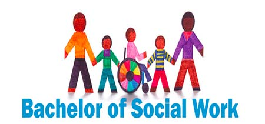

- Professional Courses After 12th Arts
- Graduation Courses After 12th Arts
- Degree Courses After 12th Arts
- Teaching Courses After 12th Arts
- Architecture Courses After 12th Arts
- One Year Diploma Courses After 12th Arts
Career Paths
Professional Courses
To pursue after 12th arts
Professional courses are designed to equip students with specialized knowledge and skills relevant to specific industries, thereby enhancing their employability and career prospects.
Top Courses
-
Bachelor of Business Administration (BBA)
Bachelor of Hotel Management (BHM)
Bachelor of Mass Communication (BMC)- 
Bachelor of Social Work (BSW)
Bachelor of Fine Arts (BFA)
Graduation Courses
To pursue after 12th arts
Graduation courses after completing the 12th grade in the arts stream offer students a wide array of opportunities to delve deeper into their areas of interest and acquire specialized knowledge.
Top Courses
-

Bachelor of Arts (BA)
Bachelor of Commerce (B.Com)
Bachelor of Design (B.Des)
Bachelor of Journalism and Mass Communication (BJMC)
Bachelor of Education (B.Ed)
Degree Courses
To pursue after 12th arts
Graduation courses after completing the 12th grade in the arts stream offer students a wide array of opportunities to delve deeper into their areas of interest and acquire specialized knowledge.
Top Courses
-

Bachelor of Laws (LLB)
Bachelor of Computer Applications (BCA)
Bachelor of Library Science (B.Lib)
Management Courses
To pursue after 12th arts
Management courses are highly valuable for students who have completed their 12th grade in the arts stream as they provide essential skills for leadership and strategic decision-making.
Top Courses
-

Bachelor of Business Administration (BBA)
Bachelor of Management Studies (BMS)
Bachelor of Tourism and Travel Management
Architecture Courses
To pursue after 12th arts
Architecture courses are an excellent choice for students who have completed their 12th grade in the arts stream and have a passion for design, creativity, and technical skills.
Top Courses
-
Bachelor of Architecture (B.Arch) 
Bachelor of Interior Design
Bachelor of Landscape Architecture